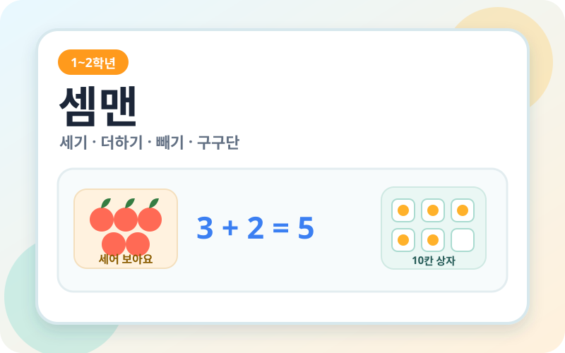

← 게임 목록으로
Educational Web Game · 1~2학년
셈맨
하나씩 세기부터 덧셈, 뺄셈, 곱셈구구까지 사과·10칸 상자·블록·접시를 직접 조작하며 차근차근 익히는 전자칠판용 수학 게임입니다.

학습 내용
1학년 수 세기와 모으기·가르기, 10을 넘는 덧셈과 뺄셈, 두 자리 수를 거쳐 2학년 곱셈의 원리와 곱셈구구까지 8단계로 연습합니다. 그림과 조작 활동에서 식으로 자연스럽게 연결하고, 단계별 학습 기록도 확인할 수 있습니다.
활용 방법
- 함께 할 인원과 문제 목표, 답하기 방법, 읽어 주기 설정을 선택합니다.
- 단계의 개념 설명을 확인하거나 원하는 활동을 골라 문제를 풉니다.
- 전자칠판에서 사과와 블록 등을 옮기고 세며 풀이 과정을 함께 이야기합니다.
- 학습 기록으로 진행 상황을 살펴보고 학습지를 만들어 복습에 활용할 수 있습니다.